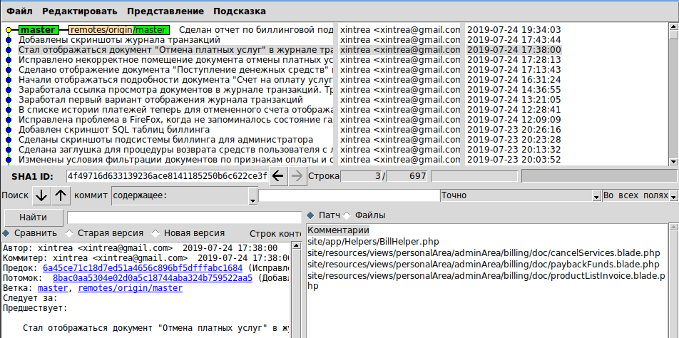
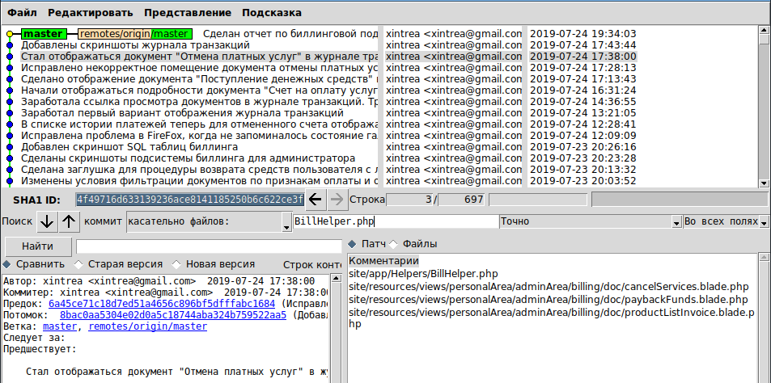
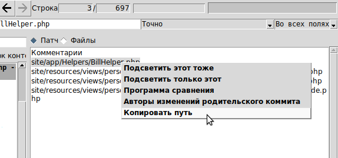
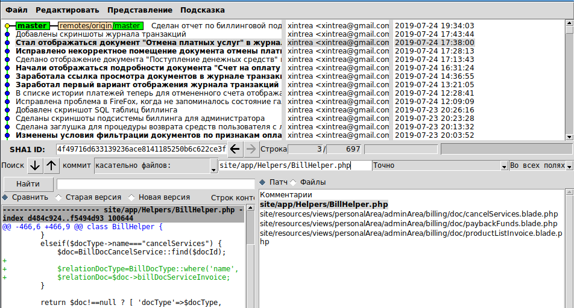

Иногда нужно быстро просмотреть, какие изменения были сделаны в определенном файле. Как это можно сделать в GUI-интефейсе gitk?
Интерфейс gitk не очень дружелюбный, и создан марсианами для марсиан. Некоторые вещи в нем делаются легко, а некоторые вызывают недоумение. Система поиска - одна из таких странных вещей.
Здесь будет рассказано, как сделать только одну вещь - как искать файлы по имени, не более того. Работа с остальными критериями поиска полна странностей и неожиданностей, поэтому здесь не рассматривается.
Итак, у нас есть следующие элементы управления:

Нас интересует файл BillHelper.php, мы хотим посмотреть в нем недавние изменения. Как нам это сделать? Мы видим два поля ввода. Одно поле предваряется надписью "Поиск" и стрелками вверх-вниз, второе предваряется кнопкой "Найти". Какое из них выбрать? Да кто ж его знает. С одной стороны рядом с нижним полем стоит переключатель "Файлы", с другой стороны у верхнего поля в выпадающем списке есть пункт "Касательно файлов". Что выбрать?
Если долго потыкаться в интерфейсе и понаблюдать что происходит, то можно понять, что:
Вооружившись этим знанием, надо выбрать верхнее поле, предварительно выставив в выпадающем списке пункт "Касательно файлов". Давайте введем в это поле имя файла и посмотрим что получится. Вводим:

Ничего не происходит. Нажатие Enter ни к чему не приводит. Кнопки вверх-вниз ничего не ищут, кнопка "Найти", как мы поняли, служит для другого поиска. В чем дело? Gitk будет молчать как партизан, и ничего не скажет о проблеме. А проблема просто в том, что надо указывать файл с полным путем.
Чтобы не набирать вручную полный путь к файлу, можно его взять прямо в gitk, если таковой файл присутствует в каком-нибудь коммите. Для этого нужно нажать на файл сначала левой кнопкой мыши (выбор) потом правой кнопкой мыши (контекстное меню) и скопировать его полный путь:

Далее надо вставить полный путь к файлу в строку поиска, и нажать Enter. Будут подсвечены все коммиты, в которых данный файл изменялся.

Кстати, для поиска файла можно поступить и по-другому. В контекстном меню файла есть пункт "Подсветить только этот", имеется в виду файл. Данный пункт меню автоматически выполнит те же действия, которые были описаны выше.
Кроме того, как выяснилось, в имени файла можно использовать символ "звездочка", чтобы заменить любую последовательность символов. Поэтому, если нужно найти файл, который в разные моменты жизни проекта находился в разных директориях, то в строке поиска можно указать:
*ИмяФайла.cpp
И последнее: что нужно нажать после ввода имени файла, чтобы начать поиск? Кнопки "Найти" или "Искать" или "Поиск" рядом с полем ввода нет. Ответ. Для поиска файла вверх и вних по дереву коммитов, нужно нажимать кнопки с иконками стрелок вверх/вниз:
Вот теперь все рассказано о том, как искать файлы через интерфейс Gitk.